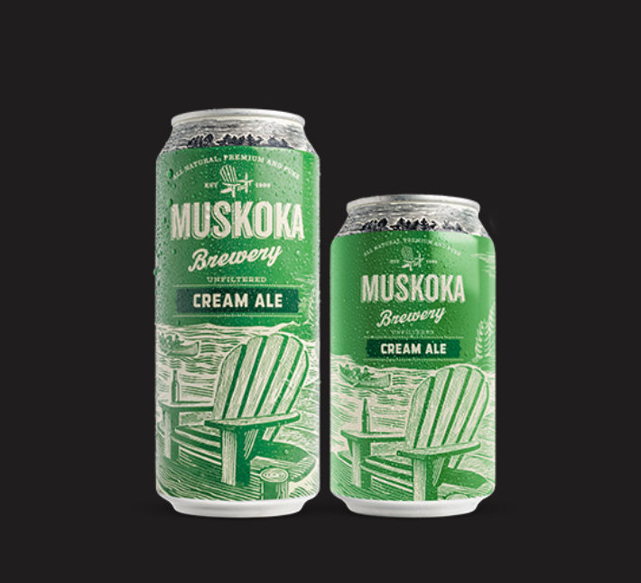
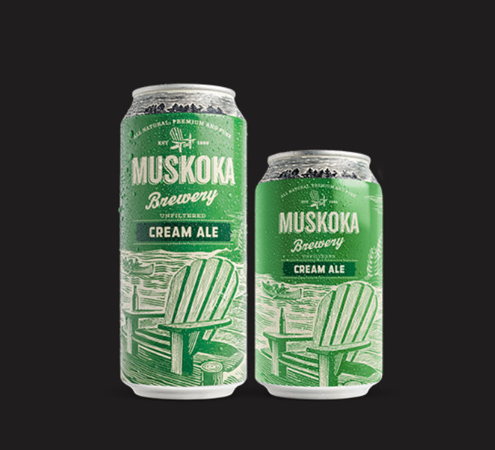

Nestled in the heart of Muskoka, Muskoka Brewery handcrafts premium beers as unique and refreshing as the region they’re from.
Founders Gary McMullen and Kirk Evans kicked open the doors of Muskoka Brewery in June of 1996. Currently owned and operated by Todd Lewin and Bob MacDonald, what started as a very small and dedicated team has quickly grown to a passionate band of beer lovers more than 130 strong.
In short, we have a passion for great beer and we hope you get a chance to enjoy it.
Interested in learning more about our journey from our small brewery on Taylor Road to now? Check out our History.
Contact Us: tap.room@muskokabrewery.com OR 705-646-1266.

There is only one Muskoka. It is a special place where rugged granite outcrops and lonely windswept pines meet the shimmering beauty of freshwater lakes. Unspoiled natural beauty is what people find here in Muskoka. This place is our home. It is at the heart of what we brew.
Go ahead, taste it.
We work hard and are unwavering in our beliefs. The connection that we feel to this place that we share has made us strong and determined. We are passionate about beer and we will make our mark. Competition only strengthens our resolve to be a leader.
We care about each other and the well-being of our community. We are approachable, understanding, and patient. We strive to make our community a better place.
We draw inspiration from the natural wilderness that surrounds us. Our beers are a reflection of us; genuine and unfiltered.
Our diversity makes us stronger as a team. We support and listen to each other. We teach and learn from each other. We laugh and celebrate together.
We are not afraid to venture off the beaten path to create and forge new ways of doing things. That is how we are built.
 


1964 Muskoka Beach Road: Just 3 minutes off HWY 11 to 118W in Bracebridge.
Tours are always free and run every hour from 12 p.m. – 3 p.m. on Wednesdays through Sundays. We recommend calling ahead to reserve your spot and avoid disappointment. Got a large group looking to visit? Contact our Tap Room and we’ll be sure to accommodate.
Contact Us: tap.room@muskokabrewery.com or call 705-646-1266. Visit Our Website